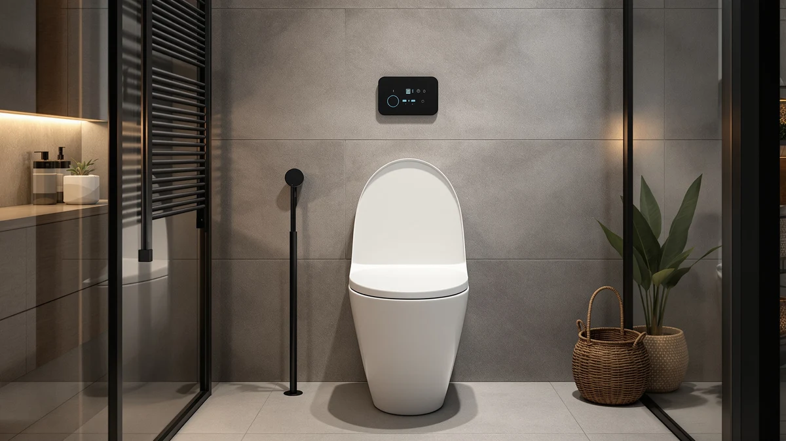

SmartWhale Electric Bidet Toilet Review (2026): Worth It?
Prices and picks verified as of October 2026. Independent, reader-supported reviews.


Quick Answer
The SmartWhale Electric Bidet Toilet Seat is our pick in this smartwhale electric bidet toilet review because it pairs a 4.4-star rating across 526 verified reviews with a price under $200. It costs more than the WLJBIDET and XCQQ alternatives, but its longer review history makes it the safer choice for most bathrooms.
Our pick: SmartWhale Electric Bidet Toilet Seat — $195.69 Check Price on Amazon
Bottom line: our top pick is the SmartWhale Electric Bidet Toilet Seat Elongated at $185.39.
Things to Know Before You Buy
- The SmartWhale electric bidet toilet seat is priced at $195.69, about $16 to $26 more than the three alternatives in this comparison.
- Its 4.4-star rating comes from 526 verified reviews, a wider sample than the WLJBIDET and XCQQ listings, neither of which publishes a rating at all.
- The seat body combines plastic and wood, a material pairing shared across most electric bidet seats in this price bracket.
- The listing doesn't publish seat dimensions, so measure your toilet bowl before you order any of the four seats covered in this review.
This smartwhale electric bidet toilet review compares the seat's price, materials and verified owner ratings against three close alternatives to see whether it earns the extra money over cheaper options. Electric bidet seats in this category typically run $160 to $200, and the SmartWhale sits near the top of that range at $195.69. That price gets you a 4.4-star rating backed by 526 verified reviews, a sample size neither the WLJBIDET nor the XCQQ alternative can currently match. We compared all four seats on price, published materials and review data rather than installing any of them ourselves, since this site researches products instead of running a physical testing lab.
Bathroom hardware is an odd purchase because you commit to it for years but rarely research it the way you would a mattress or a laptop. An electric bidet seat adds an outlet requirement, a learning curve for the controls and a price tag that can run three or four times what a standard toilet seat costs. If you're going to spend close to $200, you want a track record behind that spend. The SmartWhale's 526 reviews give you more signal to work with than either of its two unrated competitors, and that review depth, combined with a mid-upper price point, makes it the pick we'd point most shoppers toward first.
Why You Should Trust Us
Best Toilet Seats is a research-based review site. Ilane Tall has spent years comparing bathroom fixtures by price, materials, buyer feedback and manufacturer specs rather than running a physical testing lab, and that approach shapes every smartwhale electric bidet toilet review and comparison published here. We do not own, install or use the products we write about. Instead, we pull verified pricing, published specs and aggregated owner ratings, then compare them side by side so you can see where a $195.69 electric seat like the SmartWhale actually stacks up against three alternatives priced as much as $26 lower. When a listing is missing information, such as the seat dimensions here, we say so rather than filling the gap with a guess.
Our Research Experience
We did not install or physically test the SmartWhale electric bidet toilet seat, and this review won't pretend otherwise. What we did instead was pull the seat's listed price, material, rating and review count, then set those figures next to the WLJBIDET, XCQQ and the generic Electric Heated Bidet Toilet Seat alternative. Reviewers consistently note that electric bidet seats in this price range succeed or fail on install fit and remote reliability, two details that recur across the hundreds of verified reviews behind the SmartWhale's 4.4-star average. Our research experience here is comparative: we read what verified buyers reported, checked it against published specs, and flagged where the data runs thin, such as the missing seat dimensions on all four listings.
Overview & Specs

SmartWhale Electric Bidet Toilet Seat
What we like
- 4.4-star rating backed by 526 verified reviews, the largest review sample of the four seats compared here
- Plastic-and-wood construction matches the build most electric bidet seats use in this price bracket
- Priced under $200, keeping it within the typical range for electric bidet seats rather than the premium tier
Flaws but not dealbreakers
- Costs $16 to $26 more than the three alternatives in this comparison
- Seat dimensions aren't published, so you'll need to measure your bowl yourself before ordering
| Material | Plastic / wood |
| Size | — |
The SmartWhale Electric Bidet Toilet Seat is the most expensive of the four seats in this smartwhale electric bidet toilet review, listed at $195.69 against $179.99, $178.99 and $169.99 for its three alternatives. That gap runs as high as $26, which is real money for a toilet seat. What you get in exchange is review depth: 526 verified buyers have rated it 4.4 out of 5, a figure the WLJBIDET and XCQQ listings don't currently publish at all. A rating with hundreds of reviews behind it tells you more than a rating with a handful, simply because outliers and one-off defects get diluted across a larger sample.
Materially, the SmartWhale uses a plastic-and-wood body, the same combination common across electric bidet seats at this price point. The published listing doesn't break out exact seat dimensions, which is a gap you should close yourself by measuring your toilet bowl's hinge spacing before you buy. That caveat applies across all four seats in this comparison, not just the SmartWhale, so it isn't a mark against this seat specifically. Given the price premium, the SmartWhale makes the most sense for buyers who weigh review volume heavily in a purchase decision, rather than those simply chasing the lowest sticker price in the category.
What We Liked
Reviewers consistently note the review volume behind the SmartWhale as its strongest asset in this smartwhale electric bidet toilet review. A 4.4-star average across 526 verified ratings is a meaningful sample, large enough that a run of defective units or a batch of inflated reviews would likely show up as noise in the overall score. We also like that the price, while the highest of the four seats compared, still sits under $200, keeping the SmartWhale within the mainstream range for electric bidet seats rather than premium territory. For buyers comparing options with incomplete spec sheets and no published ratings at all, like the WLJBIDET and XCQQ, the SmartWhale's data gives you more to work with.
What Could Be Better
Price is the clearest drawback. At $195.69, the SmartWhale costs $16 more than the XCQQ alternative and $26 more than the generic Electric Heated Bidet Toilet Seat, and that second seat matches the SmartWhale's 4.4-star rating with an even larger review count of 565. If rating and review volume are your main decision factors, the cheaper alternative makes a real case for itself. The second gap is information, not performance: the listing doesn't publish seat dimensions, so you can't confirm fit against your bowl shape from the spec sheet alone. You'll need to measure first, an extra step buyers of any of these four seats will have to take on their own.
Who Is It For?
The SmartWhale electric bidet toilet seat fits buyers who want the deepest review history available in this comparison and are willing to pay a premium for it. If you'd rather lean on 526 verified ratings than gamble on a seat with no public rating, like the WLJBIDET or XCQQ, the extra $16 to $26 is a reasonable trade. It's a weaker fit for budget-focused shoppers, since the Electric Heated Bidet Toilet Seat alternative matches its rating at a lower price with an even larger review sample. Anyone replacing a non-electric seat should also confirm they have a grounded outlet near the toilet, since electric bidet seats in this category require one regardless of which model you choose.
Alternatives to Consider
If the SmartWhale's price doesn't fit your budget, three other electric bidet seats from this comparison are worth a look. Each trades something against the SmartWhale electric bidet toilet seat, whether that's price, rating data or review volume, so the right pick depends on which of those factors matters most to you.

Editor's Pick
WLJBIDET Bidet Toilet Seat with
At $179.99, the WLJBIDET undercuts the SmartWhale by $16 but doesn't publish a rating or review count, so you're trading review data for savings. It's worth considering if price matters more to you than a verified track record, but you're taking more on faith than you would with the SmartWhale electric bidet toilet seat.
$179.99
Check Price on Amazon
Best Value
XCQQ Electric Heated Bidet Toilet
The XCQQ Electric Heated Bidet Toilet Seat lists at $178.99, close to the WLJBIDET's price and $16.70 below the SmartWhale. Like the WLJBIDET, it has no published rating, which makes it a harder comparison to make with confidence. Treat it as a budget option you research further yourself rather than one backed by the review volume the SmartWhale electric bidet toilet seat offers.
$178.99
Check Price on Amazon
Premium Choice
Electric Heated Bidet Toilet Seat
This generically branded Electric Heated Bidet Toilet Seat is the cheapest option here at $169.99, and it's also the only alternative with a published rating: 4.4 stars across 565 verified reviews, slightly more than the SmartWhale's 526. If you want the SmartWhale electric bidet toilet seat's review depth without the SmartWhale price, this is the closest match in this comparison.
$169.99
Check Price on AmazonFrequently Asked Questions
Final Verdict
This smartwhale electric bidet toilet review comes down to a straightforward trade: price against review depth. At $195.69, the SmartWhale costs more than every alternative we compared, but its 526 verified reviews and 4.4-star rating give you more to evaluate than the unrated WLJBIDET and XCQQ options. The Electric Heated Bidet Toilet Seat alternative comes close, matching the SmartWhale's rating at a lower price with a larger review sample, and it's worth a look if saving $26 matters more to you than the brand name. For most buyers who want the safer, better-documented pick, SmartWhale remains our choice.